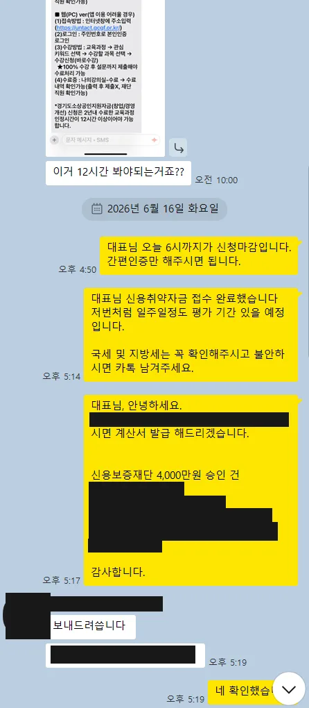
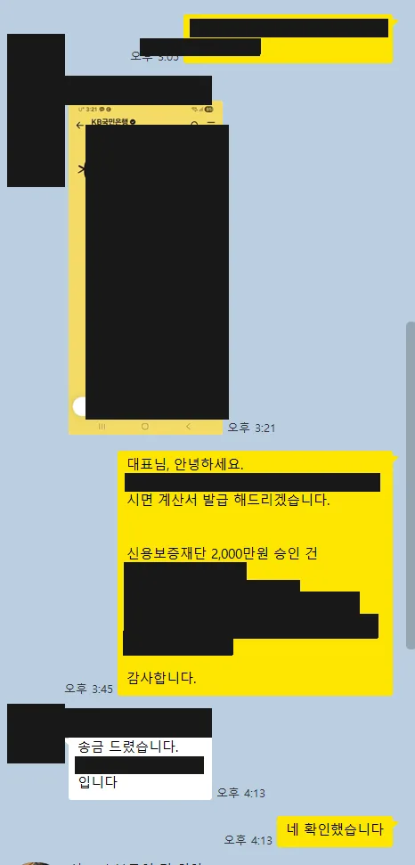
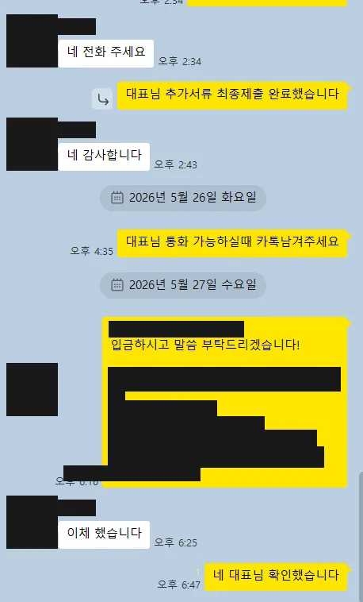
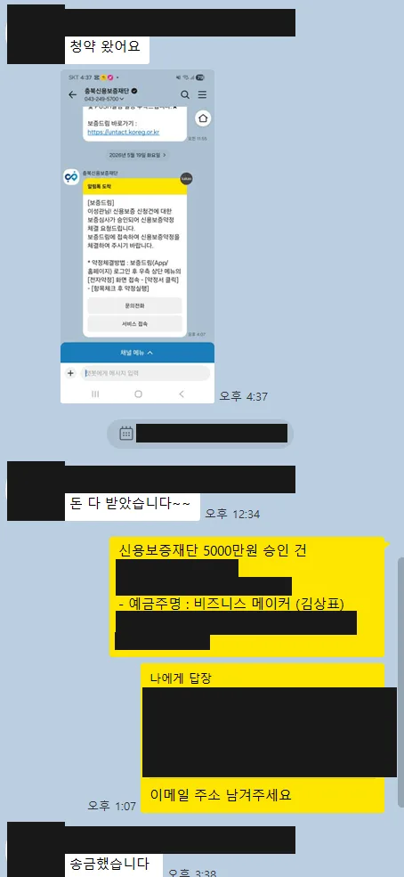
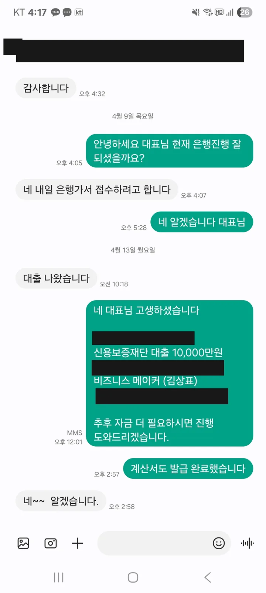
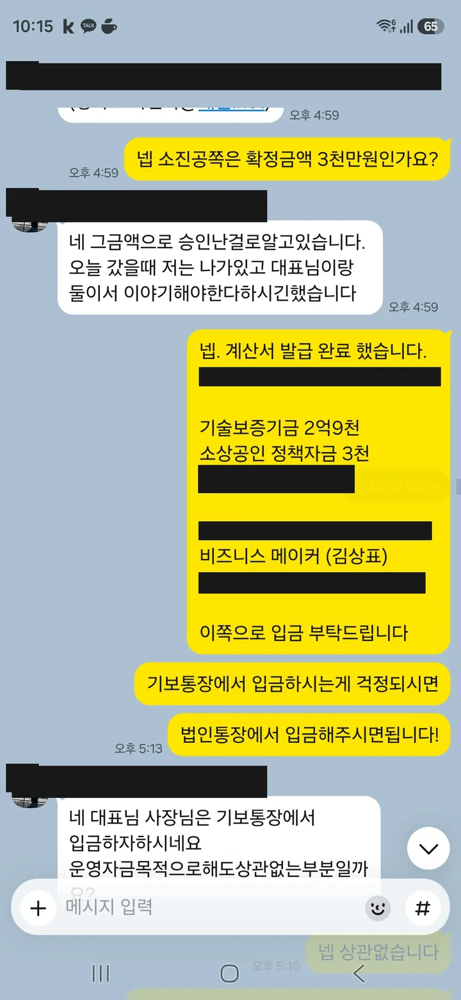
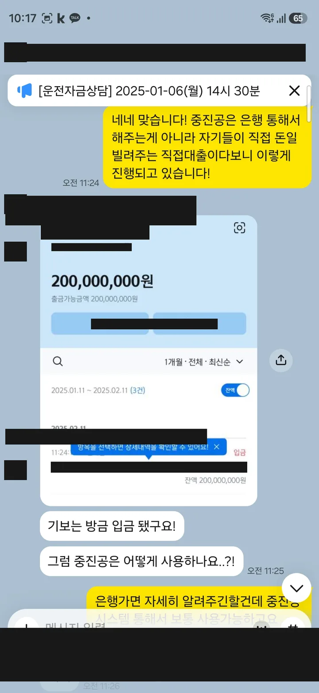

비즈니스 메이커가 진행해 실제 자금이 실행된 사례는 2025년 2월~2026년 8월 기준 총 24건, 13억 1,000만원입니다. 이 페이지는 그 전부를 기록한 원장입니다. 잘된 건만 추리지 않았고, 각 사례의 조건(신용점수·폐업 이력·체납 이력·업력)을 그대로 적었습니다. 12건은 공단·재단이 보낸 승인·약정 안내문 캡처를 증빙으로 함께 게시합니다.
정책자금은 대출이며 상환 의무가 있습니다. 승인 여부와 조건은 각 심사 기관이 결정하고, 비즈니스 메이커는 특정 결과를 보장하지 않습니다. 착수금·진행비 등 실행 전 비용은 일절 받지 않고, 자금이 실제 실행된 경우에만 성공보수를 받습니다.
실행 원장 (전체 24건)
| 실행 연월 | 기관 | 자금명 | 금액(만원) | 금리 | 지역 | 업종 | 형태 | 업력 | 신용 구간 | 특이 이력 | 소요일 | 증빙 |
|---|---|---|---|---|---|---|---|---|---|---|---|---|
| 2026-08 | 지역신용보증재단 | 보증부 대출 | 3,000 | — | 경남 | 교육서비스업 | 개인 | 15년 | 600점대 | 체납 | 45 | 보기 |
| 2026-08 | 인천신용보증재단 | 인천 소상공인 특례보증 대출 | 4,000 | — | 인천 | 건설업 | 개인 | — | 800점대 | 폐업 · 체납 | 84 | 보기 |
| 2026-08 | 소상공인시장진흥공단 | 소상공인 정책자금 신용취약소상공인자금 | 3,000 | — | 경기 | 서비스업 | 개인 | 1년 | 600점대 | 체납 | 321 | — |
| 2026-08 | 경남신용보증재단 | 보증부 대출 | 1,000 | — | 경남 | 도소매업 | 개인 | 3년 | 700점대 | 기존대출 | — | — |
| 2026-08 | 대구신용보증재단 | 보증부 대출 (경기도 지자체 소상공인 이차보전 특례보증 상품) | 2,000 | — | 대구 | 서비스업 | 개인 | 1년 | 700점대 | — | 66 | — |
| 2026-08 | 소상공인시장진흥공단 | 재도전특별자금(창업) | 2,800 | — | 경기 | 소매업 | 개인 | 3년 | 700점대 | 폐업 · 기존대출 | 94 | — |
| 2026-08 | 소상공인시장진흥공단 | 재도전특별자금(창업) | 3,100 | — | 경남 | 수산업 | 개인 | 2년 | 700점대 | 폐업 · 기존대출 | 29 | — |
| 2026-08 | 지역신용보증재단 | 보증부 대출 | 1,000 | — | 경기 | 서비스업 | 개인 | 1년 미만 | 900점대 | 폐업 · 체납 · 기존대출 | 104 | — |
| 2026-08 | 소상공인시장진흥공단 | 재도전특별자금(IV) | 5,300 | 연 4.94% | 전북 | 유통업(온라인 도소매·이커머스) | 개인 | 1년 미만 | 800점대 | — | — | 보기 |
| 2026-07 | 대전신용보증재단 | 보증부 대출 | 3,000 | — | 대전 | 도소매업 | 개인 | 1년 미만 | 800점대 | 폐업 | 17 | — |
| 2026-07 | 대구신용보증재단 | 보증부 대출 (소상공인 정책자금 대리대출) | 3,000 | — | 대구 | 요식업 | 개인 | 3년 | 600점대 | 폐업 · 기존대출 | 16 | — |
| 2026-07 | 지역신용보증재단 | 보증부 대출 (소상공인 특례보증) | 2,000 | — | 경기 | 뷰티업 | 개인 | 1년 미만 | 700점대 | — | 11 | — |
| 2026-07 | 소상공인시장진흥공단 | 신용취약소상공인자금 (소상공인 정책자금 직접대출) | 2,000 | 연 5.25% | 충남 | 제조업 | 개인 | 5년 | 600점대 | 폐업 · 체납 | 505 | 보기 |
| 2026-07 | 경기신용보증재단 | 보증부 대출 | 3,000 | — | 경기 | 서비스업 | 개인 | — | 700점대 | 폐업 · 체납 · 기존대출 | 148 | — |
| 2026-06 | 경기신용보증재단 | 보증부 대출 | 10,000 | — | 경기 | — | 개인 | 1년 미만 | 900점대 | — | 21 | — |
| 2026-06 | 경기신용보증재단 | 보증부 대출 | 1,800 | — | 경기 | 도소매업 | 개인 | 16년 | 700점대 | — | 37 | — |
| 2026-06 | 경북신용보증재단 | 보증부 대출 | 2,000 | — | 경북 | 요식업 | 개인 | 1년 | 800점대 | 폐업 | 3 | 보기 |
| 2026-06 | 소상공인시장진흥공단 | 신용취약소상공인자금 | 2,000 | 연 4.84% | 경남 | 유통(도소매) | 개인 | 1년 | 600점대 | — | — | 보기 |
| 2026-05 | 소상공인시장진흥공단 | 소상공인 정책자금 (인천 제조업 특화자금) | 4,000 | — | 인천 | 요식업 | 개인 | 4년 | 700점대 | — | — | 보기 |
| 2026-05 | 지역신용보증재단(충북) | 보증부 대출 | 5,000 | — | 충북 | 음식점업 | 개인 | 1년 | 800점대 | — | — | 보기 |
| 2026-05 | 소상공인시장진흥공단 | 혁신성장촉진자금(운전) | 6,000 | 연 3.84% | 서울 | 도소매업 | 법인 | 1년 | 700점대 | — | — | 보기 |
| 2026-04 | 부산신용보증재단 | 경기도 중소기업 육성자금 보증부 대출 | 10,000 | — | 부산 | 기술·제조 | 법인 | 5년 | 900점대 | — | — | 보기 |
| 2025-07 | 기술보증기금 + 소상공인시장진흥공단 | 기보 보증부 대출 2억 9,000만 + 소진공 정책자금 3,000만 동시 | 32,000 | — | 울산 | 기술기업 | 법인 | 7년 | 700점대 | — | — | 보기 |
| 2025-02 | 기술보증기금 | 기보 보증부 대출 2억 (중진공 직접대출 후속) | 20,000 | — | 서울 | 광고업 | 법인 | 2년 | 800점대 | — | — | 보기 |
기준일 2026년 8월 28일 · 데이터 파일: cases.csv (CC BY 4.0 — 출처 bmaker.kr 표기 시 자유 이용) · 월 1회 갱신
사례별 요약
2026년 08월 · 경남 교육서비스업 — 개인사업자, 업력 15년, 신용점수 600점대, 세금 체납 이력 있음: 지역신용보증재단 보증부 대출 3,000만원 실행. 첫 상담 접수 후 45일. 증빙
2026년 08월 · 인천 건설업 — 개인사업자, 신용점수 800점대, 폐업 이력 있음, 세금 체납 이력 있음: 인천신용보증재단 인천 소상공인 특례보증 대출 4,000만원 실행. 첫 상담 접수 후 84일. 증빙
2026년 08월 · 경기 서비스업 — 개인사업자, 업력 1년, 신용점수 600점대, 세금 체납 이력 있음: 소상공인시장진흥공단 소상공인 정책자금 신용취약소상공인자금 3,000만원 실행. 첫 상담 접수 후 321일.
2026년 08월 · 경남 도소매업 — 개인사업자, 업력 3년, 신용점수 700점대, 기존 정책자금 보유: 경남신용보증재단 보증부 대출 1,000만원 실행.
2026년 08월 · 대구 서비스업 — 개인사업자, 업력 1년, 신용점수 700점대: 대구신용보증재단 보증부 대출 (경기도 지자체 소상공인 이차보전 특례보증 상품) 2,000만원 실행. 첫 상담 접수 후 66일.
2026년 08월 · 경기 소매업 — 개인사업자, 업력 3년, 신용점수 700점대, 폐업 이력 있음, 기존 정책자금 보유: 소상공인시장진흥공단 재도전특별자금(창업) 2,800만원 실행. 첫 상담 접수 후 94일.
2026년 08월 · 경남 수산업 — 개인사업자, 업력 2년, 신용점수 700점대, 폐업 이력 있음, 기존 정책자금 보유: 소상공인시장진흥공단 재도전특별자금(창업) 3,100만원 실행. 첫 상담 접수 후 29일.
2026년 08월 · 경기 서비스업 — 개인사업자, 업력 1년 미만, 신용점수 900점대, 폐업 이력 있음, 세금 체납 이력 있음, 기존 정책자금 보유: 지역신용보증재단 보증부 대출 1,000만원 실행. 첫 상담 접수 후 104일.
2026년 08월 · 전북 유통업(온라인 도소매·이커머스) — 개인사업자, 업력 1년 미만, 신용점수 800점대: 소상공인시장진흥공단 재도전특별자금(IV) 5,300만원 실행 (연 4.94%). 증빙
2026년 07월 · 대전 도소매업 — 개인사업자, 업력 1년 미만, 신용점수 800점대, 폐업 이력 있음: 대전신용보증재단 보증부 대출 3,000만원 실행. 첫 상담 접수 후 17일.
2026년 07월 · 대구 요식업 — 개인사업자, 업력 3년, 신용점수 600점대, 폐업 이력 있음, 기존 정책자금 보유: 대구신용보증재단 보증부 대출 (소상공인 정책자금 대리대출) 3,000만원 실행. 첫 상담 접수 후 16일.
2026년 07월 · 경기 뷰티업 — 개인사업자, 업력 1년 미만, 신용점수 700점대: 지역신용보증재단 보증부 대출 (소상공인 특례보증) 2,000만원 실행. 첫 상담 접수 후 11일.
2026년 07월 · 충남 제조업 — 개인사업자, 업력 5년, 신용점수 600점대, 폐업 이력 있음, 세금 체납 이력 있음: 소상공인시장진흥공단 신용취약소상공인자금 (소상공인 정책자금 직접대출) 2,000만원 실행 (연 5.25%). 첫 상담 접수 후 505일. 증빙
2026년 07월 · 경기 서비스업 — 개인사업자, 신용점수 700점대, 폐업 이력 있음, 세금 체납 이력 있음, 기존 정책자금 보유: 경기신용보증재단 보증부 대출 3,000만원 실행. 첫 상담 접수 후 148일.
2026년 06월 · 경기 업종 미기재 — 개인사업자, 업력 1년 미만, 신용점수 900점대: 경기신용보증재단 보증부 대출 1억원 실행. 첫 상담 접수 후 21일.
2026년 06월 · 경기 도소매업 — 개인사업자, 업력 16년, 신용점수 700점대: 경기신용보증재단 보증부 대출 1,800만원 실행. 첫 상담 접수 후 37일.
2026년 06월 · 경북 요식업 — 개인사업자, 업력 1년, 신용점수 800점대, 폐업 이력 있음: 경북신용보증재단 보증부 대출 2,000만원 실행. 첫 상담 접수 후 3일. 증빙
2026년 06월 · 경남 유통(도소매) — 개인사업자, 업력 1년, 신용점수 600점대: 소상공인시장진흥공단 신용취약소상공인자금 2,000만원 실행 (연 4.84%). 증빙
2026년 05월 · 인천 요식업 — 개인사업자, 업력 4년, 신용점수 700점대: 소상공인시장진흥공단 소상공인 정책자금 (인천 제조업 특화자금) 4,000만원 실행. 증빙
2026년 05월 · 충북 음식점업 — 개인사업자, 업력 1년, 신용점수 800점대: 지역신용보증재단(충북) 보증부 대출 5,000만원 실행. 증빙
2026년 05월 · 서울 도소매업 — 법인사업자, 업력 1년, 신용점수 700점대: 소상공인시장진흥공단 혁신성장촉진자금(운전) 6,000만원 실행 (연 3.84%). 증빙
2026년 04월 · 부산 기술·제조 — 법인사업자, 업력 5년, 신용점수 900점대: 부산신용보증재단 경기도 중소기업 육성자금 보증부 대출 1억원 실행. 증빙
2025년 07월 · 울산 기술기업 — 법인사업자, 업력 7년, 신용점수 700점대: 기술보증기금 + 소상공인시장진흥공단 기보 보증부 대출 2억 9,000만 + 소진공 정책자금 3,000만 동시 3억 2,000만원 실행. 증빙
2025년 02월 · 서울 광고업 — 법인사업자, 업력 2년, 신용점수 800점대: 기술보증기금 기보 보증부 대출 2억 (중진공 직접대출 후속) 2억원 실행. 증빙
기관 안내문 증빙 (12건)
공단·재단이 고객에게 보낸 승인·약정·실행 안내를 고객 동의하에 게시합니다. 이름·상호·연락처·계좌·은행 지점은 가렸고, 자금명·금액·금리·상환 조건은 원문 그대로입니다.












산출 방법과 기준
- 출처 — 자사 CRM 정산 기록과 기관(소진공·각 지역 신용보증재단·기술보증기금)이 발송한 안내문·약정 문자 캡처 12건. 금액은 기관 안내문이 있으면 그 기준, 없으면 정산 기록 기준입니다.
- 실행 연월 — 기관 안내문 일자를 우선하고, 없으면 정산 연월입니다. 실제 대출 실행일과 몇 주 차이가 날 수 있습니다.
- 신용점수 구간 — KCB·NICE 중 낮은 점수의 100점 단위 구간입니다.
- 소요일 — 첫 상담 접수일부터 정산일까지로, 장기 상담 관리 건(300일 이상 2건)도 그대로 포함했습니다. 기록이 있는 15건만 표시합니다.
- 익명화 — 상호·대표자·상세 주소는 공개하지 않으며 지역은 시·도 단위입니다.
- 비용 — 전 사례에서 실행 전 비용은 0원입니다. 착수금·진행비 등 실행 전 비용은 일절 받지 않고, 자금이 실제 실행된 경우에만 성공보수를 받습니다.